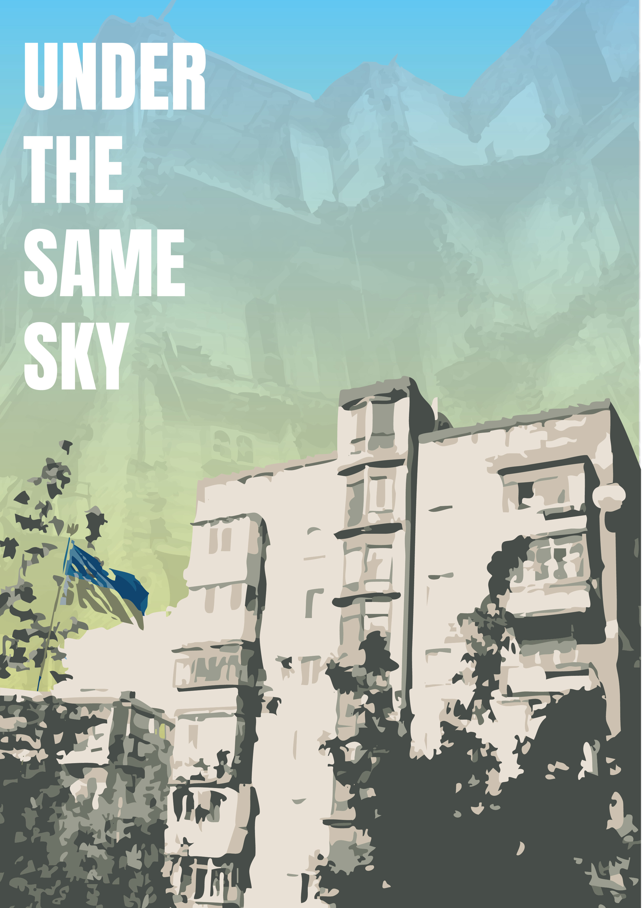

🎬 Films
🎬 Filmy
🎬 Filme
📸 Gallery
📸 Galeria
📸 Galerie

👤 About Me
👤 O mnie
👤 Über mich
Kacper Wissuwa is a filmmaker and visual storyteller. He creates a wide variety of films — from music videos, commercials, and LEGO animations to documentaries. His work explores subcultures, social change, and personal identity — always with a human, emotional perspective and a distinct visual style.
Kacper Wissuwa to reżyser i autor zdjęć, który tworzy najróżniejsze filmy — od animacji LEGO, przez teledyski i reklamy, aż po dokumenty. W swojej twórczości skupia się na subkulturach, zmianach społecznych i tożsamości — pokazując ludzki wymiar każdej historii, w unikalnym stylu wizualnym.
Kacper Wissuwa ist ein Filmemacher und visueller Erzähler. Er produziert eine Vielzahl von Filmen – von LEGO-Animationen über Musikvideos und Werbespots bis hin zu Dokumentarfilmen. Seine Arbeiten beleuchten Subkulturen, gesellschaftliche Veränderungen und persönliche Identität – stets aus einer emotionalen und menschlichen Perspektive mit einem ausgeprägten visuellen Stil.
🗺️ Places I've Filmed
🗺️ Miejsca, w których kręciłem
🗺️ Orte, an denen ich gedreht habe
🎞️ Upcoming Project
Under the Same Sky follows a Polish filmmaker’s journey to Ukraine, two years after the full-scale invasion began. Visiting Kyiv for the first time, he captures the resilience of civilians striving for normalcy amidst war. Through interviews with artists who chose to stay or return, the film explores their motivations, fears, and hopes, revealing how creativity and determination endure even in the darkest times. A poignant reflection on life under threat, it contrasts the fragile peace of the sky with the harsh realities of conflict, offering a powerful, human perspective on survival and hope.
🎞️ Nadchodzący projekt
Under the Same Sky opowiada o podróży polskiego filmowca na Ukrainę, dwa lata po rozpoczęciu pełnoskalowej inwazji. Odwiedzając Kijów po raz pierwszy, dokumentuje on odporność cywilów, którzy walczą o normalność w obliczu wojny. Poprzez wywiady z artystami, którzy zdecydowali się zostać lub powrócić, film ukazuje ich motywacje, lęki i nadzieje — pokazując, jak kreatywność i determinacja przetrwają nawet w najciemniejszych czasach. To poruszająca refleksja o życiu pod zagrożeniem i sile ludzkiego ducha.
🎞️ Bevorstehendes Projekt
Under the Same Sky begleitet die Reise eines polnischen Filmemachers in die Ukraine – zwei Jahre nach Beginn der großangelegten Invasion. Bei seinem ersten Besuch in Kiew dokumentiert er die Widerstandskraft der Zivilbevölkerung, die trotz des Krieges nach Normalität strebt. Durch Interviews mit Künstlern, die geblieben oder zurückgekehrt sind, beleuchtet der Film ihre Beweggründe, Ängste und Hoffnungen – und zeigt, wie Kreativität und Entschlossenheit selbst in dunklen Zeiten überleben. Ein bewegendes Porträt über das Leben im Ausnahmezustand und die Kraft der Hoffnung.